路网监测，展示了当前城市的交通运行状态，并选用流率、饱和度等指标展示具体的交通状况运行趋势。具体如下：
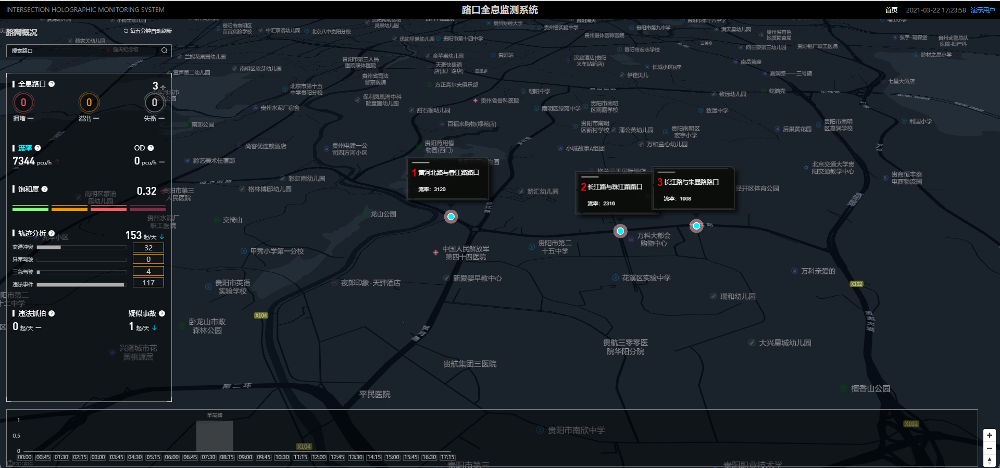
路口种类 |
路口说明 |
|---|---|
失衡路口 |
基于高精路口各方向拓扑关系和车辆真实轨迹数据，实时计算路口各方向速度和路口的失衡指数，并按照指数进行全域排名。 |
溢出路口 |
基于高精路口之间的拓扑关系和车辆真实轨迹数据，实时计算路口的溢出指数，并按照指数进行全域排名。 |
流量异常路口 |
基于高精路口之间的拓扑关系和车辆真实轨迹数据，实时计算路口的流率，并判断流率变化幅度。 |
事故路口 |
基于路口空间范围和车辆真实轨迹数据，实时监测路口内的事故警情，对于出现的疑似单车事故、疑似多车事故及时告警。对具体事故进行精准分析，为事故定责提供参考，可快速查看证据视频及事故发生前后的历史轨迹、历史视频。 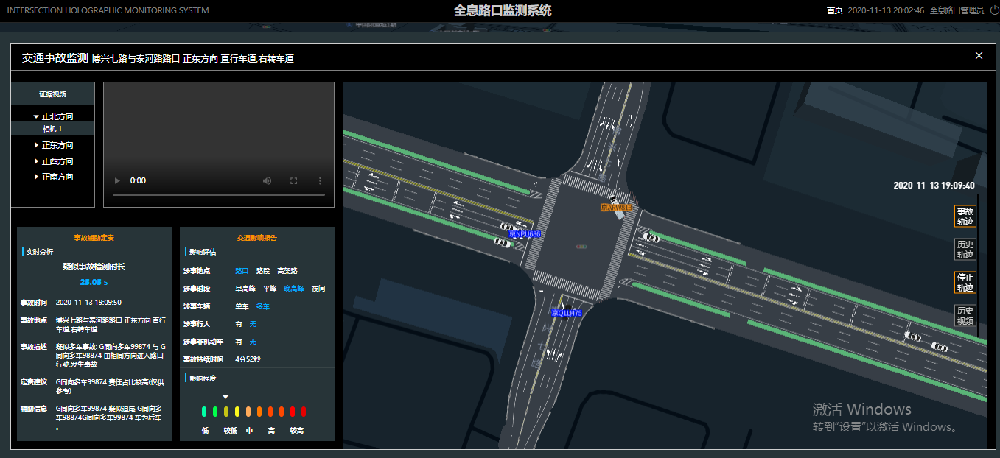 |
异常事件路口 |
基于路口空间范围和车辆真实轨迹数据，实时监测路口内的违规掉头、违规变道、逆向行车、闯红灯等时间，并进行统计分析并展示。 |
监测当前路口的实时车辆轨迹、以及运行状态。已实现接入路口实时视频，可查看路口车辆历史轨迹、历史视频。
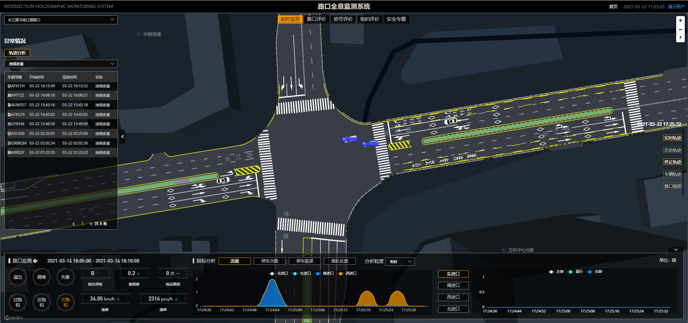
路口检测模块 |
模块说明 |
|---|---|
路口搜索 |
输入路口名称，可以进行地图定位，支持模糊查询。 |
车辆轨迹展示 |
提供入口车道级轨迹和出口车道轨迹汇聚功能，能叠加路口相关信息，如路口名称。界面可实时展示各路口轨迹数据，可锁定窗口，可调整模型位置，可关闭轨迹数据展示界面。 显示路口范围内的轨迹，实现分方向、分时间段的轨迹汇聚显示和分析。 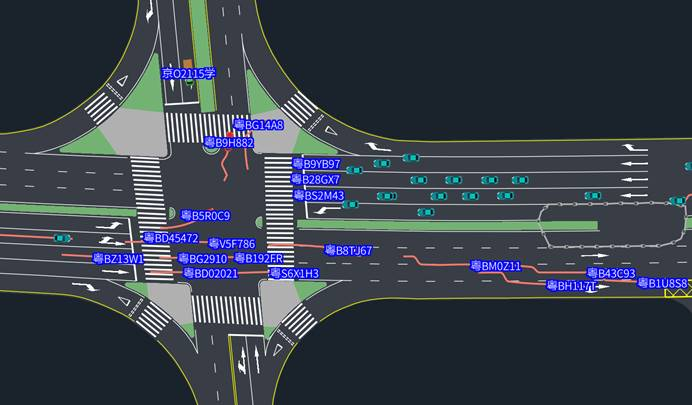 |
车辆识别 |
对于经过停止线附近的车辆进行车牌识别，并和轨迹进行空间拟合，实时展示车辆的车牌和车型（大车或者小车）等车辆相关信息。 |
车道指标计算 |
基于高精度地图、雷达轨迹数据，计算路口各方向的排队长度、停车延误、流量、停车次数等关键交通指标。 |
历史轨迹回放 |
支持事件轨迹重构，在获取道路拥堵和交通事故等交通事件报警后，能通过轨迹回放交通事件发生前后的检测范围内的目标动态轨迹，轨迹重构的时间范围可配置，默认为事件发生前30s到事件发生后30s。 |
路口视频 |
提供路口视频的实时接入和显示。 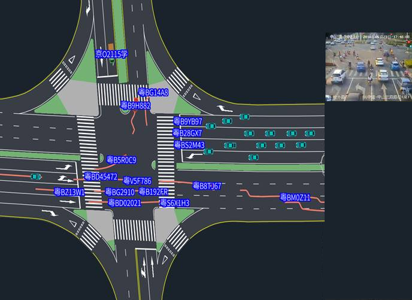 |
基于高精地图，从通行延误、流量统计、交通安全三个方向及路口、进口和出口等维度进行评价。
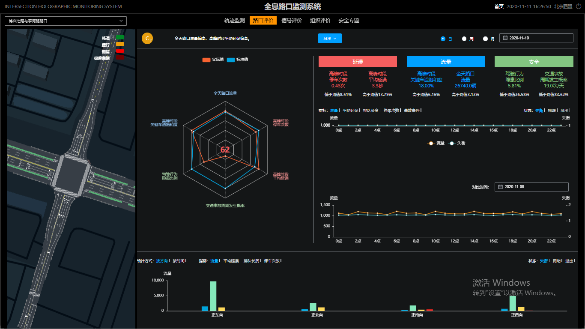
路口评价模块 |
模块介绍 |
|---|---|
路口整体评价 |
根据计算的各项路口指标进行分析运算，对路口进行整体评价，评价共分五个等级：A、B、C、D、E，其中A级为最高等级。 |
展示车道路况 |
利用雷达实时轨迹数据和路网拓扑数据，可以实时分析路口、进口和出口的路况信息，实时计算车道流量和速度，并在车道上进行精细化展示。 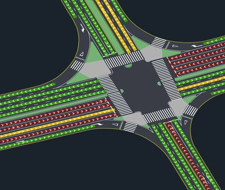 |
展示路口评价雷达图 |
根据分析时段计算当前路口的高峰时段停车次数、高峰时段平均延误、高峰时段关键车道饱和度、全天路口流量、驾驶行为隐患比例、交通事故周期发生概率等分析指标，将指标计算结果与参考值对比分析，绘制路口评价雷达图并对路口交通状况评分。 |
绘制一天中指标变化趋势图 |
针对下述指标：流量、平均延误、排队长度、停车次数、事故事件、失衡指数、拥堵指数、溢出指数，计算分析一天中指标变化趋势，并绘制趋势折线图，为路口评价提供数据支撑。 |
按路口方向分析交通指标 |
按路口方向如东、南、西、北等统计分析交通流量、平均延误、排队长度、停车次数指标，为路口评价提供数据支撑。 |
基于高精地图、雷达数据对路口进行时空一体化的评价，维度包括进口流量比、进口转向流量比、波动系数、潮汐路段流量比不均等系统，通过多角度的评价，找出路口空间和时间匹配上的问题，进而通过优化提升效能。
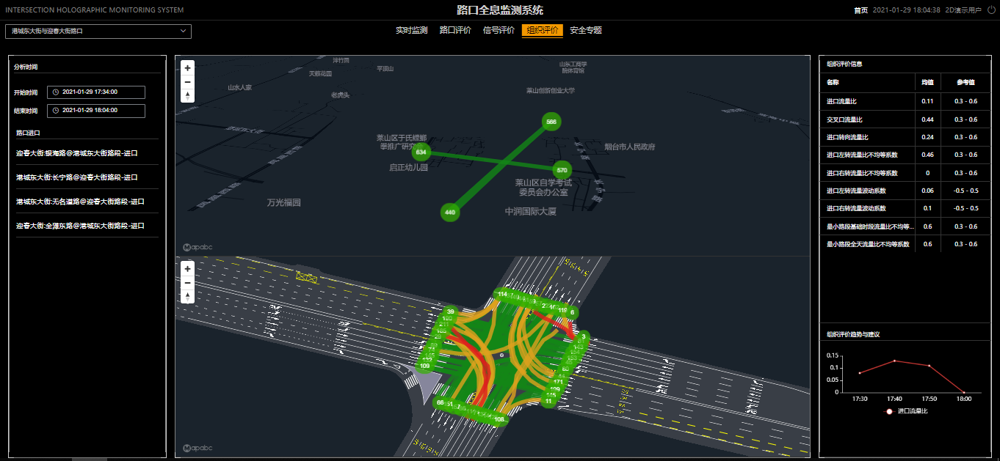
组织评价模块 |
模块介绍 |
|---|---|
流量分析 |
利用雷达实时轨迹数据和路网拓扑数据，实时计算分析时段内路口方向级流量数据，并进行可视化展示。 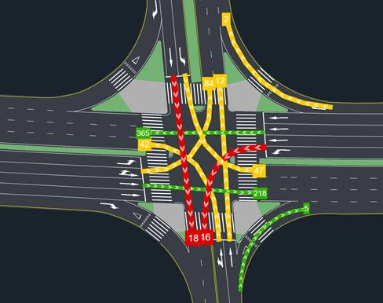 |
进口评价 |
基于高精地图、雷达数据对路口进行评价，评价维度包括流量比、波动系数、不均等系数等。 |
转向评价 |
基于高精地图、雷达数据对路口转向进行评价，评价维度包括流量比、波动系数、不均等系数等。 |
路口关联流量（OD）计算 |
基于高精地图、雷达数据对本路口及关联的上下游路口的流量进行计算，绘制进入该路口的流量关系图。 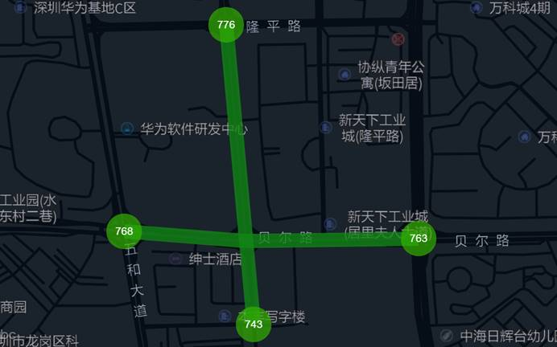 |
通过对安全事件的监测和分析，对事件进行排名，主要事件包括不按车道行驶、疑似交通事故、逆向行车、冲突点、违法超速、违规变道等，通过对事件聚合分析，寻找路口安全隐患，并进行空间化展示，为路口的秩序管理提供数据支撑。
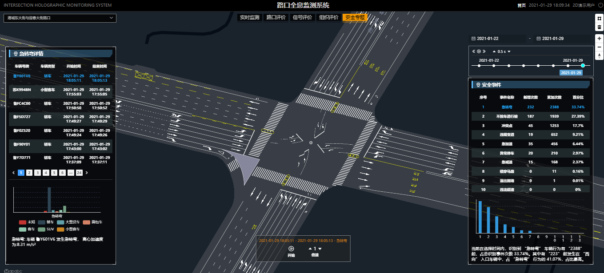
安全专题模块 |
模块说明 |
|---|---|
交通异常事件统计分析 |
实现按时段、按类型统计异常事件，并寻找高发事件类型、事件高发区域，实现按方向、按车辆类型等多维度统计分析异常事件，为路口评价、优化提供数据支撑。 |
疑似交通事故分析 |
基于高精度地图、雷达轨迹数据对车辆的轨迹进行实时监测和分析，发现疑似单车事故后进行预警和记录，事故可以区分大车、小车，并可以按照时间段进行查看。对疑似交通事故进行定责分析，并输出交通影响报告，可查看事故证据视频以及事故发生前后的车辆历史轨迹、历史视频。
|
冲突点事件分析 |
基于高精度地图、雷达轨迹数据分析冲突点，可将冲突点分为大车-大车，大车-小车、小车-小车，并进行记录，可按照时间段进行历史查看。 |
违规变道事件分析 |
基于高精度地图车道线、雷达轨迹数据分析违规变道，并进行记录，可按照时间段进行历史查看。 |
逆向行车事件分析 |
基于高精度地图进出口、车道线以及雷达轨迹数据分析逆向行车，并进行记录，可按照时间段进行历史查看。 |